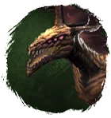
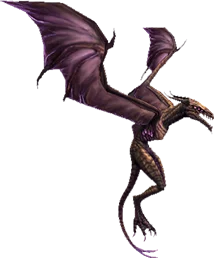

Открыть в интерактивной вики →

| Уровень | 80 |
|---|---|
| Прокачка | есть |
| Ранг в стае | 10 |
| Здоровье | 2700 |
| Мана | 1800 |
| Выносливость | 1000 |
| Статистика | Уровень: 80, ранг: 10, здоровье: 2700, мана: 1800, выносливость: 1000 |
Цена

Где взять
Покупается в Клетке гильдий 3
Выкуп
Выкуп за смерть:
10х Платина либо откат 4 часа
Платина либо откат 4 часа
10х
Платина либо откат 4 часаНавыки


Скины
Доп. информация
Требуемый уровень: 80
Цена: 3 400 000 золота и 700 платины
Покупка: III гильдейская клетка
Может получать опыт — ДА
Описание
 | Тонкий, как веточка, но твёрже стали. Твиг владеет вуду и даёт хозяину бесценную поддержку. Поможет сражаться в землях, где не всегда удаётся собрать подходящий отряд. Твиг — друг для требовательных. Атакует физически, издалека и ментально. Использует: Отупение, Отравление, Игла в глаз, Удар тени, Укол куклы, Мощный удар. | |